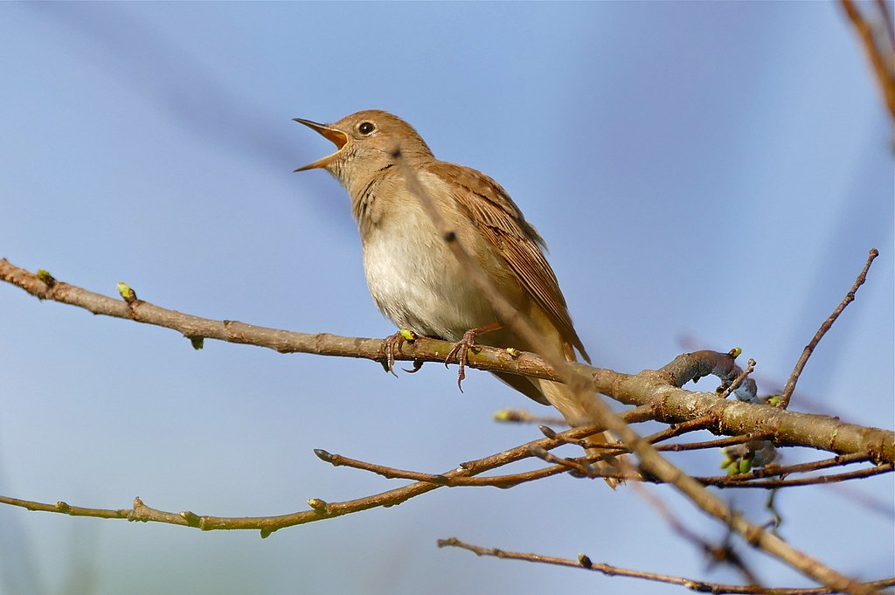
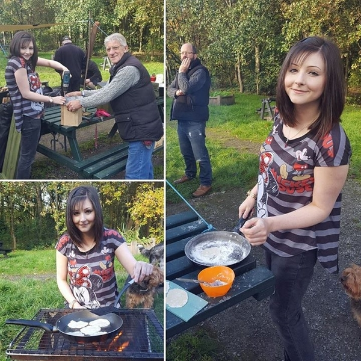
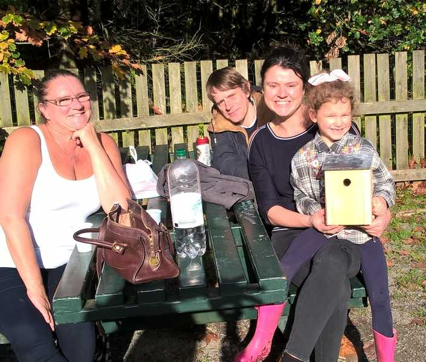

Recently we have had a series of awful cold snaps, bringing snow and ice. However, this has not affecting the bird and pond life. Sightings over the last few months have included nightingales, singing their beautful songs. There is now a heron that can be sometimes seen on the park. Bullfinches and goldfinches can be seen too. The success of the birds may be in part due to the diverse trees. Some trees such as the cypress due to the way they trap air, can be 6c-9c warmer than the air temperature. We have also seen freshwater shrimp in the ponds - a sign of healthy clean water.
Many thanks too for all who put out nuts and seeds on the park for the birds to keep them fed over the cold period. This made a massive difference!

The common nightingale Alex
Event
Volunteer Bulb Planting - Sat 24th Feb
Join us for a few hours work on the park! We are aiming to create places for flowerbeds at the entrances and under the lecterns, de-weed, tidy the borders and plant some bulbs.
In 2017 we held an event for the community to build bat boxes and to help children and adults alike connect to nature in the park. In a future session we will put up the bat boxes around the park and people will be able to see them around the park for years to come! The bats in the park are at risk and we are doing what we can to support them. See below for photos.


Alex
Event
Bowler St Community Clean Up - Sat 3rd Jan
The resident's association on Bowler St are having a community clean up day on the streets around Bowler St and Watts St. Litter pickers shall be provided. Bring gloves if you have some - some spares will be available.
The Green Square, Bowler St 10am Sat, 3rd Feb Emily 07825 261247
Event
Extraordinary General Meeting - Tue 9th Jan 2018
Our bi-monthly Friends meeting will happen at the baptist church opposite the Sidings pub. This meeting will include a vote on a new committee structure. This structure would mean more officers would be part overseeing decisions. All welcome.
Come and join us for a Christmassy walk around the park, get to know your neighbours and community, and then join us for a drink in the Sidings pub after.
The Friends of Highfield Country Park are bidding for funds to create a bee sanctuary in the park. Our idea is to create a Bee sanctuary garden in Highfield, one that all can enjoy and use as a walk through, and a place to sit and soak up the sun in the beautiful garden. A place where people can be educated and become closer to nature, but most of all for the bees of Manchester! As we all know, our bees need help, and it is vital that we help protect them. The aim is to have as many fruit trees, flowers, plants herbs and grasses that bees can flourish in, whilst creating an elegant space for families and other wildlife to enjoy. There would be a trail, which includes facts about bees, their different species, how they protect us and how we can help protect them. Read more and vote for us on the Aviva website!
Alex
News
Plans to Develop on Highfield Country Park Rejected
Plans were submitted by Towerhouse Systems to propose developing 57 houses on Cringle Road by Highfield Country Park. This would have covered the land where the Shores Fold Community Farm currently stands.
Reasons given for the council rejecting this development included:
Lack of access :- since it is assumed that each household may have two cars each, 114 cars may have to use Cringle Road for access. The roads were not considered big enough to cope with this.
Shores Fold Community Farm :- the farm is unique to this area, allowing families to visit and get tours of the animals. The loss of this farm would mean children would not get a chance to learn about animals.
Bat population :- bats have been confirmed to be living in Highfield Country Park and are a protected species. The loss of farmland would have an detrimental impact on their numbers. Now that this has been confirmed, we hope to do more work to support the bats.
Volunteers Peter and Steve put in a new bench by the pond just by Nelstrop Road. This Tolkien-esque pond looks wild enough to make you think you may find crocodiles inside! And now there is a place for you to relax here, with a new bench that is in place. The new bins have been put in by the picnic area by Bowler St, by St Andrews, and on the path along by Cringle Road.
Alex
Event
Family Event: Building Bat & Bird Boxes
Come to this family friendly event and help protect the wildlife of the park. The biodiversity of the park is growing, and it is great news we now have confirmed bat populations living there. This event is supported by the John Muir Trust and we are grateful to them for support. Read more about bats in the UK at the Bat Conservation Trust.
Highfield Country Park (meet at the picnic area by the Fallowfield Loop) 10am - 3pm Fri 27th October Alec - 0161 4832671
Event
Friends of Highfield Country Park Meeting
Bi-monthly meeting for anyone interested in helping support the park and the community. Please come along and get involved!
{kind=link}